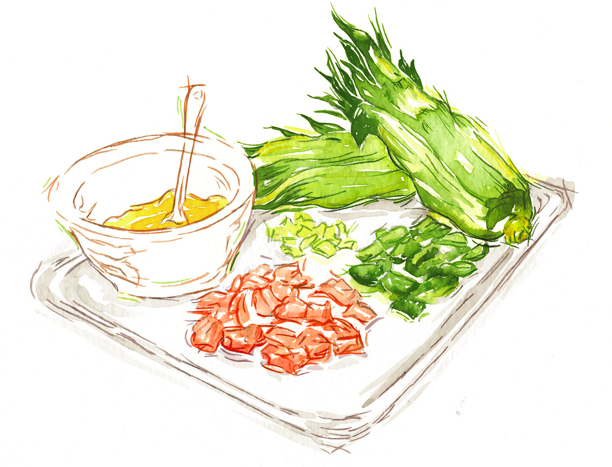

My process includes both digital and physical tools to complete my project. I have a strong background in illustration that I have complimented with digital edits.
The purpose of Ingredient Endeavors is to make meal planning and preperation easier. For that reason, my personas are a very wide variety for any life stage or life style. The app is meant for anything who is wanting to explore cooking and perhaps streamline their planning capabilities by the ability to search by ingredient and narrow through cuisine types.